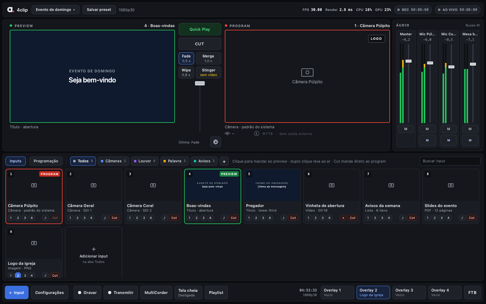
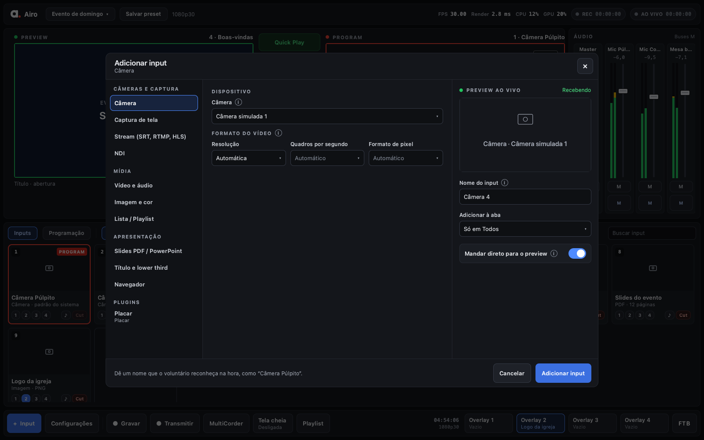
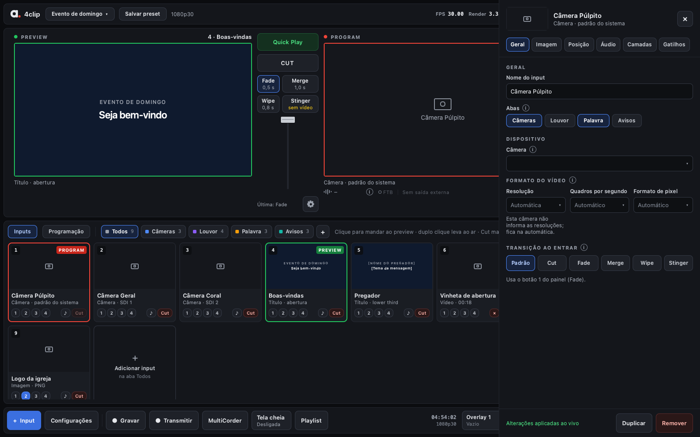
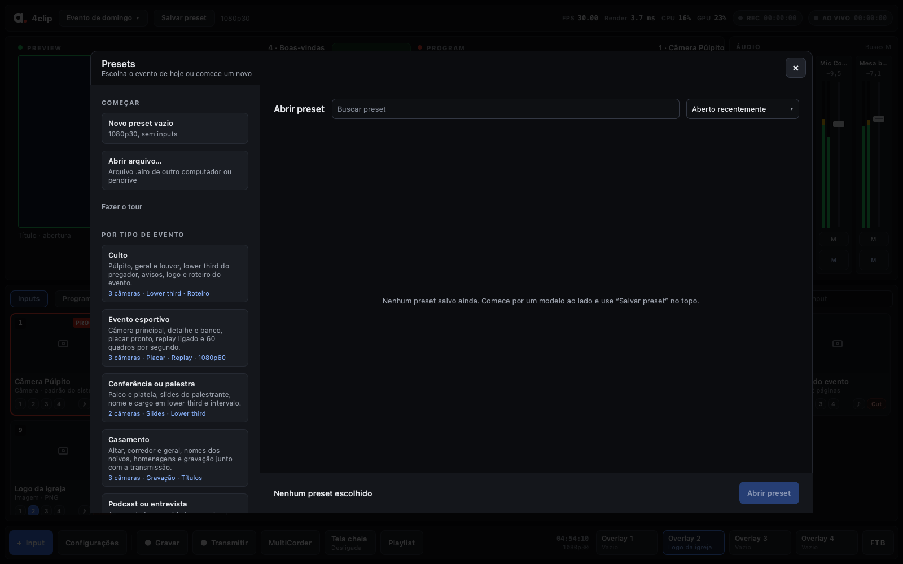

Vermelho está no ar. Verde é o próximo.
As duas cores valem em toda a tela: monitores, cartões de input e botões. Dá para saber o que o público está vendo sem ler nada.
Câmeras, letras, slides e transmissão numa tela só. O Airo tem o fluxo de preview e program que a equipe de mídia já conhece.
macOS, Windows e Linux · como abrir na primeira vez

O que a igreja já usa entra no mesmo fluxo
Ao vivo não tem segunda chance. Por isso o Airo deixa tudo claro.
As duas cores valem em toda a tela: monitores, cartões de input e botões. Dá para saber o que o público está vendo sem ler nada.
Todo ajuste tem uma dica curta ao lado, e os valores padrão já vêm certos. Dá para ir ao ar sem mexer em nenhuma configuração.
Abra o preset e câmeras, letras, legendas e destinos de transmissão voltam do jeito que estavam. O Airo salva sozinho a cada 5 minutos.
No Airo, o input vai primeiro ao preview, em verde. Quando estiver certo, CUT ou FADE colocam no ar, em vermelho. Clique num input para assumir o corte.
Demonstração automática. Clique num input para assumir o corte.CUT ou FADE colocam no ar · OV 1 liga a legenda
Preview, program, transições e overlays funcionam como numa mesa de corte profissional, sem menus escondidos.
Cada fonte aparece como um cartão com miniatura ao vivo. Organize em abas como Câmeras, Louvor, Palavra e Avisos.
Cada um com sua qualidade. Se a conexão cair, o Airo reconecta sozinho.
Medidor por canal, buses Master, A e B, noise gate e compressor por input.
Quatro canais de overlay para lower third, logo e avisos, e o Fade to Black para encerrar. Experimente os botões.
Monte a ordem do evento em blocos e siga item por item, sem procurar input na hora.
Grave enquanto transmite, com divisão automática por tamanho ou por tempo.
O program sai em tela cheia para o projetor ou a TV da igreja, direto do Airo.
O preset .airo guarda tudo e abre igual em outro computador. As chaves de transmissão ficam no cofre do sistema, nunca no arquivo.
Capturas do aplicativo com o projeto de exemplo “Evento de domingo” aberto.



Preview à esquerda, program à direita, transições no meio. Embaixo, os inputs do evento organizados em abas e os quatro overlays.
O Airo Remoto é o app de celular para trocar de input e ajustar o áudio longe da mesa, de qualquer ponto da igreja.
Comandos por HTTP, estado em tempo real por WebSocket e webhooks que avisam outros sistemas. Tudo pela rede local, com um token para cada aparelho.
http://<ip>:4601/api/v1Comandos simples por URL: cortar, ligar overlay, iniciar e parar a transmissão ou a gravação.
ws://<ip>:4600Eventos e estado em tempo real, para painéis, tally e controladores.
stk_…Um token por aparelho, cada um só com as permissões que precisa.
X-Airo-SignaturePOST com JSON assinado em HMAC-SHA256, com novas tentativas quando a entrega falha. O envio nunca trava o vídeo.
Meu HinárioO plugin do Meu Hinário leva hinos, letras e leituras para o telão.
Uma chamada HTTP inicia a transmissão em todos os destinos ativos do preset.
Ler a documentaçãoGuia: transmissão ao vivo no site da igreja
Sem níveis e sem recurso cobrado à parte. Teste o Airo completo por 15 dias e, se servir para a sua igreja, continue por um valor fixo por mês.
Hoje
Monte o preset do seu evento e transmita de verdade. Não pedimos cartão para testar.
Até o dia 15
Nada é cobrado sozinho quando o teste acaba. Seus presets continuam no computador.
Depois
Os mesmos recursos e os mesmos presets. Sem fidelidade e sem multa: cancele quando quiser.
R$59,90por mês
Assinatura mensal, preço único, por computador.
Começar o teste grátisNão. Baixe o Airo e use por 15 dias com tudo liberado. Você só informa o cartão se decidir continuar.
Nada é cobrado sozinho. Para continuar usando o Airo, assine por R$ 59,90 por mês. Seus presets continuam no computador.
Para um. Cada computador que roda o Airo precisa da própria assinatura.
Pode. Não há fidelidade nem multa. O acesso segue até o fim do mês já pago e os presets continuam no seu computador.
Cartão de crédito, com cobrança mensal.
Não. O Airo tem um plano só, e ele inclui todos os recursos.
Baixe o Airo, abra um modelo de preset e faça o primeiro corte em minutos. Os primeiros 15 dias são por nossa conta.
15 dias grátis com tudo liberado, depois R$ 59,90 por mêsTodas as versões
O sistema pode pedir uma confirmação antes de abrir o Airo pela primeira vez.
Na primeira vez, o macOS pede uma confirmação. Depois disso, o Airo abre normalmente.
Airo\Airo.exe.sudo apt install libopengl0chmod +x Airo-Linux-x86_64.AppImage ./Airo-Linux-x86_64.AppImage